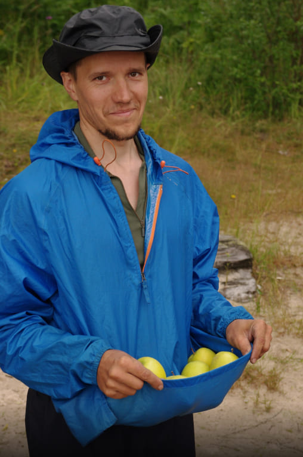
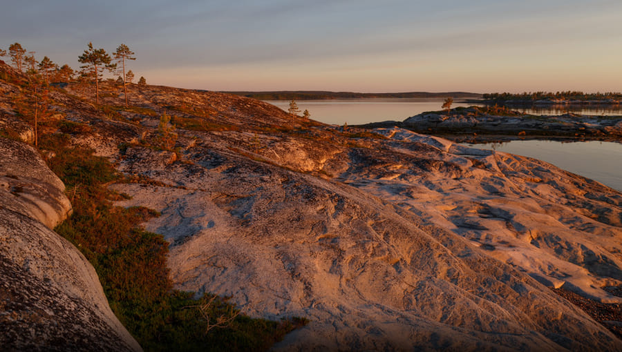

Привет :) Напишу сегодня о нашем Большом маршруте по Белому морю на морских каяках, фотографии в статье в основном 2017 года, на фото начало июля.
После похода 2017 года я переработал этот маршрут, раньше он проходил на 50 км южнее, от Нижней Пулонги до Куземы, но там приходилось несколько дней преодолевать достаточно однообразные низкие берега с неудобными стоянками после Калгалакши и до губы Воньги.
Поэтому теперь маршрут подвинут на север, начинается от пос. Пояконда и идёт до губы Калгалакша (не путаем с Кандалакшей:) и охватывает почти все красивейшие места Карельского берега Белого моря. Он включает наш маршрут Великая Салма и остров Сидоров, и повторяет его в 1-6 дни, а далее мы уходим на юг, в более дикие и совершенно другие места.
На Карельском берегу ещё много интересных и красивых мест, начинаются они на 50 км южнее нашего финиша в Калгалакше, от бухты Воньги и Куземы и далее в сторону Кузовов, там проходит наш маршрут по Кузовам.
Для удобства встреча с участниками в этом году будет в Кандалакше, поезда туда приходят около 6:40, можно нормально выспаться и потом провести полноценный день на маршруте. До поселка Пояконда около 1.5 часа пути. Это небольшая деревня с небольшой полуразрушенной пристанью.
Здесь мы соберем лодку сопровождения, куда погрузим все личные вещи, групповое снаряжение и продукты на поход. В 2018 году на этом маршруте мы будем использовать лодку «Адмирал».

Инструктором на этих маршрутах будет Илья Степанов, он научит вас основам каякинга и каждому поможет удобно настроить каяки. Мы как и раньше используем каяки Winner Hug и Otium. Они доступны всем, и даже тем, кто ни разу не был в водном походе.
А дальше… Дальше мы разделимся на экипажи каяков, немного потренируемся и в путь! Впереди огромное Белое море. Ещё пока не бескрайнее, берега видно, потому что мы в Ругозерской губе, тихой и спокойной, идеальной для первого тренировочного дня. Идти по ней около 15 км, а первую стоянку мы сделаем немного ранее на островах.
В августе тут много грибов и ягод. В основном подосиновики, моховики, черника и брусника. Вода в море чистейшая, есть приливы и отливы, перепад уровня воды более метра. Стоянку организуем на одном из островов с пляжем. Даже если будет прохладно, стоянки с пляжами приятнее и удобнее.
На выходе из бухты около посёлка Приморский мелко и сильные приливно-отливные течения. 2 раза в сутки вода наполняет Ругозерскую губу и уходит обратно в море.
После выхода из Ругозерской губы начинают встречаться высокие скальные берега.
А в проливе Великая Салма множество скалистых островов с красивыми стоянками, от маленьких до огромных.
Губа Красная с её низкими каменистыми пляжами, пролив между о. Кемлудский и берегом, проходимый только в прилив, и мы в губе Кив. Посмотрим гору Шевруха, высота её всего 42 метра, а вид красивый.
Погода бывает очень разной, может всё затянуть туманом, может идти дождь сколь угодно долго, может светить солнце, может дуть ветер, может быть волна, может быть полный штиль. Всё может быть на Белом море.